神經網路
Table of Contents

1. 機器如何辨識圖像
Figure 1: 貓狗特徵如何區別
機器是如何能區分貓狗的圖片？現在這似乎是個十分尋常簡單的能力，就和電腦能計算加減乘除那樣。然而在機器學習成熟前，這卻是個十分困難的問題。在回答這個問題之前，我們先來看一個更簡單的圖形識別問題：讓電腦來讀入「／」及「＼」兩個圖像並進行識別。
1.1. 「／」v.s.「＼」
首先要先理解，電腦眼中的圖像皆是由像素(pixel)組成，我們先假設「／」及「＼」兩個圖像在電腦眼中其實是如以下的矩陣所示：其中+1表示有像素存在，反之則以-1表示。
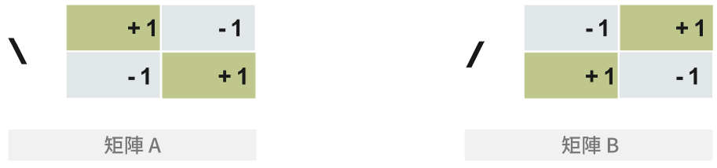
如同我們之前在監督式學習中的分類和迴歸所做的，我們希望能找到一個機制，將矩陣A、B當成輸入，最後希望能輸出0、1來代表「／」、「＼」，講白了，我們其實一直在做的事情都是找到一個這樣的函數：
若輸入矩陣A，則函數傳回
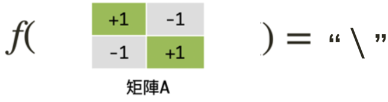
若輸入矩陣B，則函數傳回
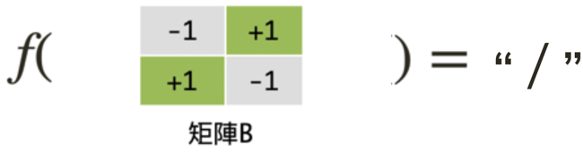
能做到這點，也許我們將來就能找出這種函數:
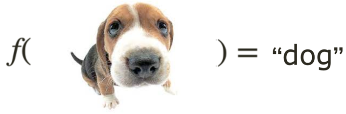
或是這種函數
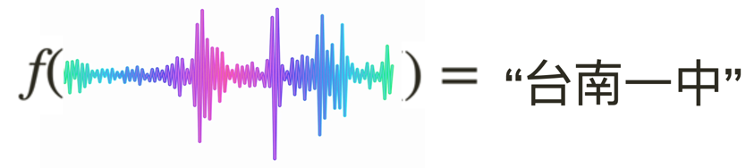
也就是語音辨識，甚至是找出這類函數：
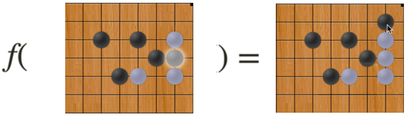
這雖然只是五子棋，但我們也向AlphaGo邁進一小步了。
1.2. 將待解問題數學化
在繼續做夢之前，讓我們回到現實，怎麼找出這個函數：
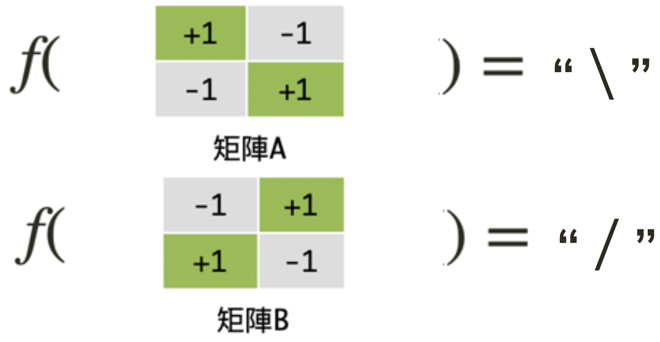
Figure 2: 目標函數
如何藉由數學運算來將上述兩個矩陣區分為「／」及「＼」兩個圖像？似乎把矩陣裡的數值進行相加或相乘都無法達到要求，因為兩個矩陣元素相加或相乘的結果都相同。顯然我們需要引入額外的變數來協助：加入另一個新的矩陣來與這兩個矩陣進行運算。
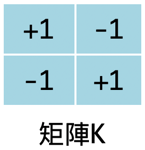
經由如下的矩陣計算，我們可以初步擬定一條分類規則：若是運算所得值大於0，則此圖像為＼；若是運算所得值小於0，則判定為／。
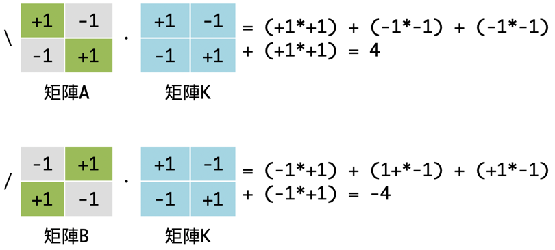
然而，若是電腦所讀入的「／」及「＼」兩符號書寫過於潦草，那麼我們的判斷是否仍然正確呢？假設所讀入的「＼」圖像在右上角的彎曲幅度過大，以致於佔去了三個像素（如下圖矩陣A）；而「／」圖像又因寫的太短，僅佔了左下角一個像素（如下圖矩陣B）。經由如下的計算結果，我們發現仍可將二者進行正確分類。此時，我們可以宣稱這個方法是強韌的(robust)。
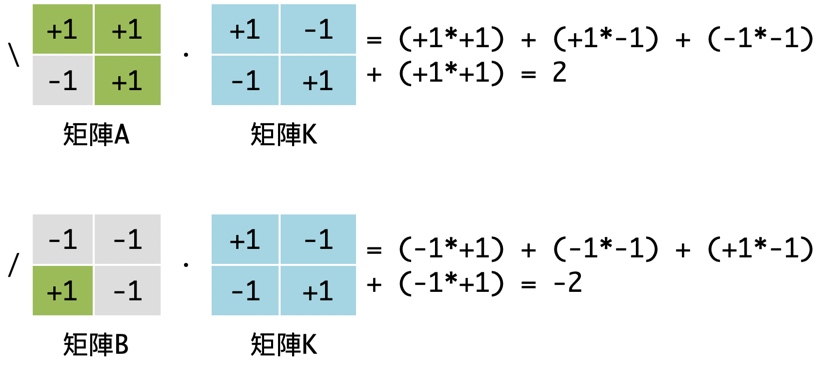
在上述範例中：
- 矩陣K對矩陣A、B所進行的運算即為卷積(convolution)，矩陣K在卷積神經網路中稱之為卷積核(convolution kernel)，其作用即在於萃取出資料特徵。藉此，我們達成了利用數學運算來擷取圖像特徵，也可以理解到為何深度學習能夠過濾資料雜訊而完成圖像識別。
- 計算得到結果後，我們私自擬定一條分類規則：若是運算所得值大於0，則此圖像為＼；若是運算所得值小於0，則判定為／。在神經網路中，這就是激勵函數(Activation Function)。
至此，你有沒有一種Déjà vu的感覺？沒錯，我們實作出了一個感知器(如圖3)：
- 矩陣A就是感知器的輸入值
- 矩陣K裡的值就是感知器中的weight和bias
- 決定何時輸出“\”、何時輸出“\”的功能其實就是激勵函數
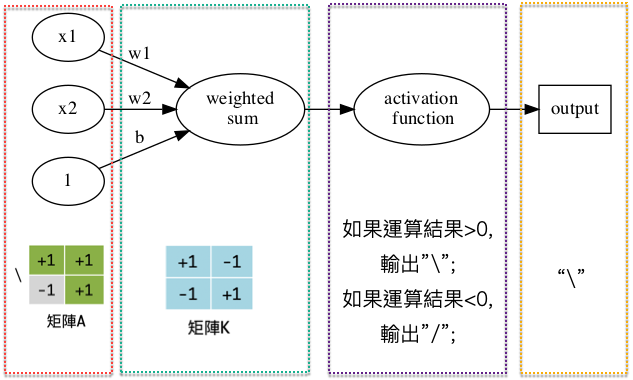
Figure 3: 感知器基本結構
而感知器只是神經網路中的基本元素。
1.3. [課堂作業]如何辨識「及」 TNFSH
思考一下，如果你想要區分「及」兩個符號(如右圖)，你要如何訂制你的卷積核？你的方法夠強韌嗎？
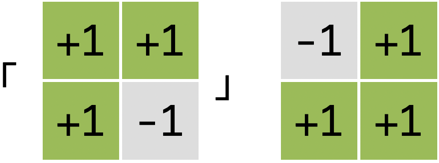
2. 照片分類任務的兩個難題
2.1. 缺乏可用特徵值
回顧監督式學習中的分類任務中，我們為每張照片中的動物手動定義了不同的特徵，並賦予不同動物不同數值，最後利用這些特徵值來進行分類預測。
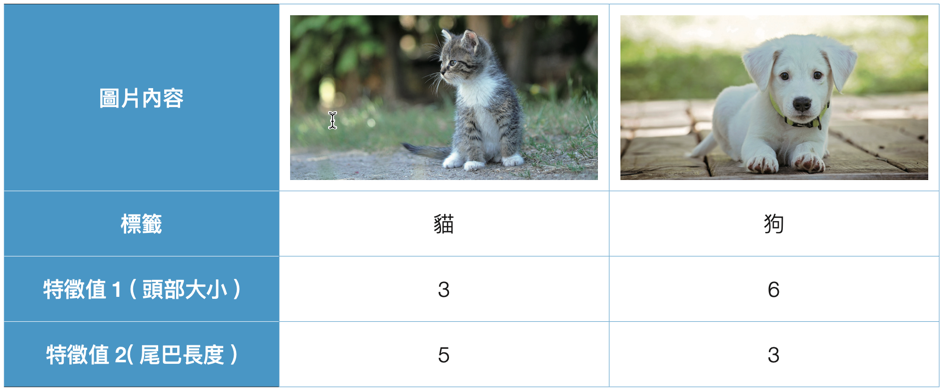
就連在KNN分類器:IRIS的任務中，鳶尾花的資料集也是友善的自帶花萼和花瓣資料才來要求我們完成分類工作。
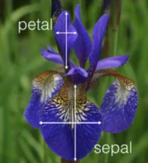
但是，如果我們要辨別的是全新的照片呢？難道我們要進行下圖這種分類時都要手動生成相對應的特徵？所以在輸入照片後還要再手動丈量所需特徵值(頭部及尾巴佔身體比例)？如果是，這種能力也太廢了點。
至此我們發現了真正要實作照片辨識時的第一個問題：缺乏特徵值。
2.2. 缺乏適當參數
在機器如何辨識圖像一節中，我們想出了利用另一個新矩陣K來從兩張影像的矩陣抽取出特徵。
如果你有認真做完課堂作業 - 如何辨識「及」，你大概會發現這個矩陣K並不是那麼好踹出來的，而且我們花了這麼多精力踹出一個矩陣也只能抽取出原圖的一個特徵，難道這就是機器學習的玩法？
3. 類神經網路
3.1. 概念
類神經網路的機制解決了前述兩大問題，方法是效法人類腦神經系統的運作。
在生物神經系統的結構中，神經元(Neuron)之間互相連結，由外部神經元接收信號，再逐層傳導至其他神經元，最後作出反應。
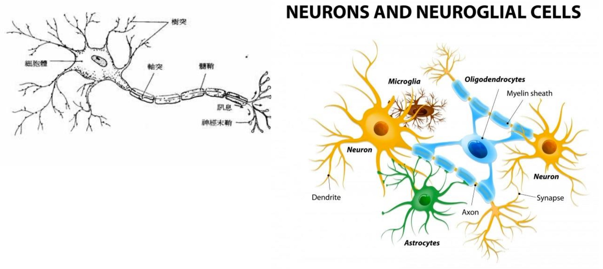
Figure 4: 神經元與神經網路
類神經網絡是一種機器學習機制，它模仿人類大腦的學習方法。人類的大腦從外界接受刺激，並處理這些輸入（通過神經元處理），最終產生輸出1。當任務變得複雜的時候，大腦會使用多個神經元來形成一個複雜的網絡，並在神經元之間傳遞訊息，人工神經網絡就是模仿這種處理機制的一種算法。
圖5為典型的三層類神經網路，輸入層(layer 0)有 2 個神經元，兩個隱藏層(layer 1, layer 2)各有3個(a1, a2, a3)及2個(b1, b2)神經元(灰色圓圈為bias)，輸出層(layer 3)則有兩個神經元。
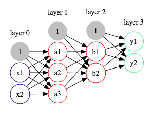
Figure 5: 三層神經網路
神經網絡的基礎模型是感知器(perceptron)，因此神經網絡也可以叫做多層感知器(Multi-layer Perceptron)，簡稱MLP2。
我們可以把圖5中的每個神經元都視為一個抽象的感知器實作，如圖6，每個神經元都自前方取得輸入資料，經過一番計算後，再將輸出結果傳給後方的神經元，當成後方神經元的輸入。這種訊息在神經網路中傳遞的方式稱為前向傳播(forward propagation)，而實際神經網路中各層的神經元的訊息傳遞則是透過矩陣相乘來進行。

Figure 6: 神經元/感知器
3.2. 解決第一個問題
如前所述，一個感知器可以抽取出一份輸入資料的特徵值，那麼，再看一下圖5中的forward propagation
- 第0層(layer 0)裡的兩個神經元(x1, x2)在取得原始資料後，就能抽取出其中的兩項特徵值，而這兩項特徵值就當成(layer 2)的輸入來源
- 第1層(layer 1)裡的三個神經元(a1, a2, a3)則可抽取出來源資料的三項特徵值(可視為更高階或更抽象的特徵)，而這三項特徵值再當成layer 2的輸入
- 第2層(layer 2)裡面的兩個神經元(b1, b2)繼續抽取出更抽象的兩項特徵值經過計算送往layer 3
- 第3層(layer 3)在收到layer 2傳來的結果後，經過內部運算並輸出預測結果。
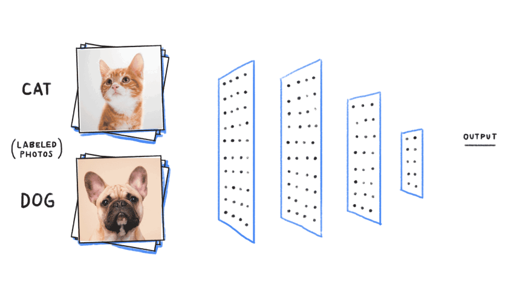
Figure 7: Forward propagation
藉由這樣的設計，在進行照片分類時，如果我們在每一層都塞入512個神經元，那光是透過第一層就能由每張照片中抽取出512種不同特徵值了，如此就解決了我們面臨的第一個問題：缺乏可用特徵值。
3.3. 解決第二個問題
然而如果事情有這麼簡單，機器學習也不至於在1970年代邁入寒冬。還記得課堂作業 - 如何辨識「及」吧，裡面只有一個要處理的矩陣K，一共只有4個要踹出來的數值，想像一下有512個神經元，裡面有512個矩陣K，每個矩陣也不用太大，只要3×3就好(9個參數)，那光第一層我們就要處理多少參數呢…顯然，要踹出合適的所有參數值不是人力所能及的工作。
神經網路解決這個問題的方式非常的率性且不負責任：隨機!!
是的，就如同考試時你面對陌生選擇題的反應，神經網路也決定這麼幹，隨便丟一些數值填到矩陣中當成第一批參數。事實上，同樣的策略我們在線性迴歸:年齡身高預測/隨機的力量裡已經玩過了，當初在找出方程式的最佳參數組合時，我們也是閉上眼睛隨便選一組。不管整個網路中有多少參數，當我們隨機設定好了所有參數的最初值後，整個神經網就可以運作了，嗯…至少已經可以依照前向傳播的流程輸出第一個預測結果了，你看，我們已經朝完美的人工智慧跨近一大步了-_-

接下來的流程其實和迴歸有點類似，我們評估預測結果的品質，然後回頭修正參數，只是這次的工程有點浩大，我們要修正所有的參數，這個回頭修正所有參數的過程稱為反向傳播(backward propagation)。
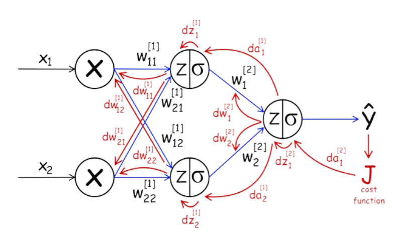
Figure 8: Back Propagation
第一次以隨機設定的參數跑出來的結果肯定是慘不忍睹的，因為它的原則就是「有就好」，就好像某些政黨在成立之初找不到信徒，所以什麼殺人犯或貪污犯，只要你肯入黨就照單全收，因為只要親近黨主席，這些人最終都會變成好人。
好吧，扯遠了，反正神經網路的第一輪預測品質基本上就是瞎猜，不過沒關係，就像我們在迴歸裡做的事一樣，我們每次都會評估預測品質，在這裡我們用損失函數(loss function, 也就是圖8裡的cost function, J)來評估預測品質，當評估結果未達標準，我們就回頭修正參數。在迴歸這一章保持距離以測安全裡的例子裡，我們只要修正一個參數(\(\hat{y} = w * x\) 裡的\(w\))，用的方法是找出參數的切線斜率，決定修正方向。二者的最終目標其實是一樣的：讓預測誤差達到最小化。
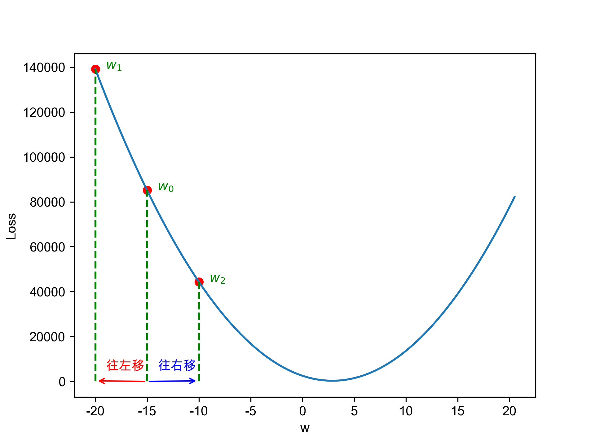
Figure 9: 決定w應往哪個方向移動
面對動輒成千上萬的參數，神經網路採用「隨機梯度下降法（Stochastic Gradient Descent，SGD）」來找出各個參數的梯度(我們可以先把它當成前例中的切線斜率)，然後沿著梯度方向修正各個參數，從最後一層反向修正回到第一層(就是反向傳播在做的事)，於是我們就有了第二個版本的參數值了(第一個版本就是隨機指定的)。
然後呢?就再從頭玩一次啊：以一批原始資料(圖片)當成輸入再跑一次正向傳播，得到預測、評估預測品質、再反向傳播回去修正所有參數，得到第三個版本的參數值…，只要你時間夠多，你可以一直玩下去，這就是神經網路學習的奧義了…
什麼？你問「隨機梯度下降法」原理？這個等我學完偏微分以後再解釋給你聽….QQ
3.4. 神經網路如何學習(正經版)
3.4.1. 基本步驟
利用隨機梯度下降法(SGD)求梯度並更新 weight 和 bias 參數
- 從訓練資料中隨機選擇一部分資料
- 利用前向傳播，求出預測的輸出值，以損失函數(loss Function)計算預測值與真實答案(label)的誤差，再利用用反向傳播方法，求各參數的梯度。
- 將所有權重參數沿其各自的梯度方向進行微小更新
- 重複以上步驟(epoch=100, 500, 1000, …)直到誤差最小化
(http://www.feiguyunai.com/index.php/2019/03/31/python-ml-24th-backp/)
3.4.2. 誤差函數（Error / Loss Function）
神經網路需要一把「尺」來衡量預測結果有多離譜，這把尺就是誤差函數（又稱損失函數 loss function）。誤差的基本概念很直覺：
誤差 = 真實答案(\(y\)) - 模型預測值(\(\hat{y}\))
但我們通常不會直接用「相減」來衡量，因為正負誤差會互相抵消。實務上會根據問題類型選用不同的損失函數：
- *迴歸問題*（預測連續數值，如房價、成績）：使用均方誤差（MSE）
- \(E=\frac{1}{2}\sum\limits^{n}_{i=1}(y_i - \hat{y}_i)^2\)
- 白話：把每筆資料的誤差平方後加總，這樣正負誤差就不會抵消了
- \(E=\frac{1}{2}\sum\limits^{n}_{i=1}(y_i - \hat{y}_i)^2\)
- *分類問題*（預測類別，如辨識數字 0~9）：使用交叉熵（Cross Entropy）
- \(E=-\sum\limits_{i=1}^{n}\hat{y}_i*\log{y_i}\)
- 白話：當模型對的答案很有信心時，誤差很小；反之，信心滿滿卻猜錯時，誤差會爆炸性的大——就像老師改考卷時，如果學生自信滿滿的寫錯答案，扣分會特別狠
- \(E=-\sum\limits_{i=1}^{n}\hat{y}_i*\log{y_i}\)
3.4.3. 學習步驟
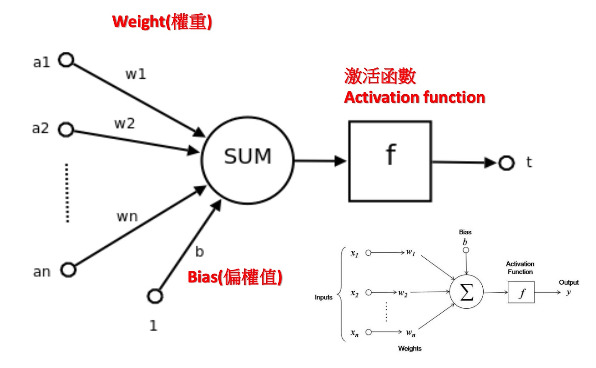
Figure 10: 簡化版神經元
以上面這個簡化版的神經元為例：
- 隨機指定weight與bias的值。
- 計算出模型結果值
計算出誤差：即計算結果與真實值之差異
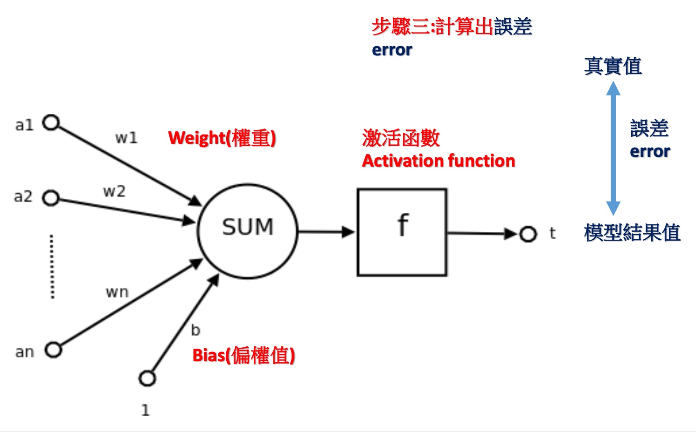
Figure 11: 類神經網路
- 定義 weight 與 bias 的更新策略(update the weights and bias)，其更新策略為從錯誤中學習。學習規則為
- \(\Delta w=\eta X^T (\hat{y} - y)\): \(w\)(新的)=\(w\)(前一回)+\(\Delta w\)(誤差變動)
- \(\Delta b=\eta (\hat{y} - y)\): \(b\)(新的)=\(b\)(前一回)+\(\Delta b\)(誤差變動)
- \(\eta\) = 學習率
- \(\Delta w=\eta X^T (\hat{y} - y)\): \(w\)(新的)=\(w\)(前一回)+\(\Delta w\)(誤差變動)
使用新的 weight 與 bias，計算直到誤差很小(定義何時結束)
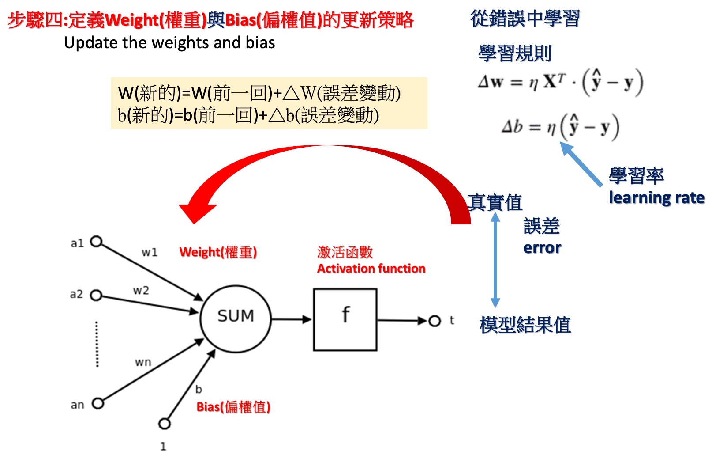
Figure 12: 類神經網路
3.5. 神經網路的輸出層
神經網路可以用來解決分類問題與迴歸問題，端視輸出層所使用的活化函數，解決迴歸問題時使用恆等函數，而分類問題則使用 softmax 函數 。恆等函數對於輸入的內容完全不做任何處理，直接輸出，其神經網路的結構如圖13所示。
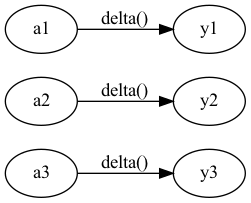
Figure 13: 恆等函數神經網路圖
而分類問題使用的 softmax 函數則如公式\eqref{org13285d7}所示，\(exp(x)\)為代表\(e^x\)的指標函數，輸出層有 n 個節點，而每個節點收到的訊息\(y_k\)來自前一層以箭頭連接的所有訊號輸入，由公式\eqref{org13285d7}的分母也可以看出，輸出的各個神經元會依以「依各節點訊號量比例」的模式影響下一層的輸入。
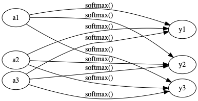
Figure 14: softmax 函數神經網路圖
至於 softmax 的 python 實作則如下程式碼所示，為了避免因矩陣 a 的值過大而導致指數函數運算出現溢位，程式碼第4行的內容也可以改由第5行替代。
1: #python code for softmax funtion 2: import numpy as np 3: def softmax(a): 4: exp_a = np.exp(a) 5: #exp_a = np.exp(a - np.max(a)) 6: sum_exp_a = np.sum(exp_a) 7: y = exp_a / sum_exp_a 8: return(y) 9: a = np.array([0.3, 2.9, 4.0]) 10: print(softmax(a))
[0.01821127 0.24519181 0.73659691]
3.5.1. softmax 函數的特色
softmax 的輸出為介於 0 到 1 間的實數，此外，其輸出總和為 1，這個性質使得 softmax 函數的輸出也可解釋為「機率」。例如，前節程式碼的輸出結果為[0.01821127 0.24519181 0.73659691]，從以機率的角度我們可以說：分類的結果有 1.8%的機率為第 0 類；有 24.52%的機率為第 1 類；有 73.66%的機率為第 2 類。換言之，使用 softmax 函數可以針對問題提出對應的機率。
softmax 函數的另一個特色是其輸出結果仍保持與輸入訊息一致的大小關係，這是因為指數函數\(y=exp(x)\)為單調遞增函數。一般而言，神經網路會把輸出最大神經元的類別當作辨識結果，然而，因為 softmax 不影響大小順序，所以一般會省略 softmax 函數。
輸出層的節點數量取決於要解決的問題，例如，如果要解決的問題為「判斷一個手寫數字的結果」，則輸出層會有 10 個節點(分別代表 0~9)，而輸出訊息最大的結點則為最有可能的答案類別。
4. 深度神經網路(DNN)
深度神經網路(Deep Neural Network, DNN)，顧名思義就是有很多層的神經網路。然而，幾層才算是多呢？一般來說有1-2個隱藏層的神經網絡就可以叫做多層，準確的說是(淺層)神經網絡(Shallow Neural Networks)。隨著隱藏層的增多，更深的神經網絡(一般來說超過3層)就都叫做深度神經網路2。而那些以深度神經網路為模型的機器學習就是我們耳熟能詳的深度學習。
4.1. 學習與參數:以迴歸問題為例
想像一個國中的數學問題：在平面上畫出\(y=2x+3\)的直線，如圖15左的直線(\(y=ax+b\))，決定這條直線的因素有二：斜率\(a\)與截距\(b\)，這兩項因素即可視為該直線的參數，像這種由已知參數去畫出對映直線的問題稱之為順向問題；反之，如果目前只知道平面上有幾個點，希望能畫出最符合的這些點的線，這種問題就稱為逆向問題。像圖15右圖的紅線明顯就不是一條最符合的線，而解決這個問題就變成透過「尋找最佳參數」來畫出最理想的迴歸線，神經網路便是希望能藉由網路模型的不斷學習來找出最佳參數。
1: import numpy as np 2: import matplotlib.pylab as plt 3: 4: def f(x): 5: return 3*x+2 6: 7: x = np.arange(-5.0, 5.0, 0.1) 8: y = f(x) 9: plt.figure(figsize=(10, 5)) 10: plt.subplot(1, 2, 1) ## 左圖：已知函數 y=3x+2 11: plt.plot(x, y) 12: plt.ylim(-30, 30) 13: plt.axvline(0, color='k', linestyle='--') 14: plt.axhline(0, color='k', linestyle='--') 15: plt.xlabel('x') 16: plt.ylabel('y') 17: plt.title('順向問題: y = 3x + 2') 18: plt.subplot(1, 2, 2) ## 右圖：已知點，求未知函數 19: plt.axvline(0, color='k', linestyle='--') 20: plt.axhline(0, color='k', linestyle='--') 21: plt.ylim(-30, 30) 22: plt.plot(2, 8, "o") 23: plt.plot(-2, -7, "o") 24: plt.plot(4, 25, "o") 25: plt.plot(-4, -24, "o") 26: 27: def f1(x): 28: return 12*x+29 29: 30: y1 = f1(x) 31: plt.plot(x, y1, color='r') 32: plt.xlabel('x') 33: plt.ylabel('y') 34: plt.title('逆向問題: 找最佳直線') 35: plt.tight_layout() 36: plt.savefig("images/simplefx-1.png") 37: print("圖片已儲存")
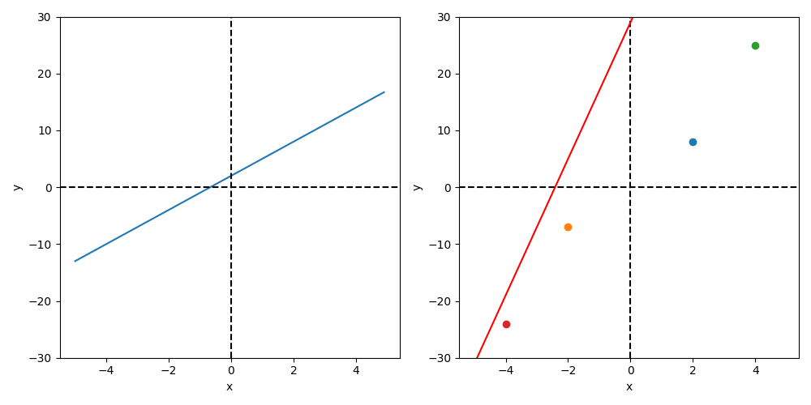
Figure 15: 由已知函數畫出直線與由已知點找未知函數
同理，如果我們將解題目標改變為「預測學生學測總級分」，那麼，我們得先了解有那些因素會影響學生的學測成績，初步估計也許包括以下因素：
- 上課狀況
- 是否認真寫作業
- 歷次段考成績
- 校內模考成績
- 回家後是否努力讀書
- 是否沉迷網路遊戲或手機遊戲
- 是否有男/女朋友
此時，我們的預測模型就如圖16所示

Figure 16: 學測成績預測模型#1
然而，上述因素只是一般性的文字描述，畢竟過於模糊而無法對之進行精確計算，所以，我們有必要再對其進行更精確的描述，此處的參數（即影響因素及相對權重）又稱為特徵值。此外，每個因素影響學測結果的程度理應會有所差異，因此也有必要對各因素賦予「加權」（也稱為權重），詳細考慮後的因素及加權列表如下。
| no | 因素編號 | 模糊描述 | 精確描述 | 權重 |
|---|---|---|---|---|
| 1 | \(x_1\) | 上課狀況 | 平均每次上課時認真聽講的時間百分比 | \(w_1\) |
| 2 | \(x_2\) | 是否認真寫作業 | 作業平均成績 | \(w_2\) |
| 3 | \(x_3\) | 歷次段考成績 | 各科段考平均成績 | \(w_3\) |
| 4 | \(x_4\) | 校內模考成績 | 歷次模考平均成績 | \(w_4\) |
| 5 | \(x_5\) | 放學後是否努力讀書 | 放學後花在課業上的時間 | \(w_5\) |
| 6 | \(x_6\) | 是否沉迷網路遊戲或手機遊戲 | 每天平均花在遊戲的時間 | \(w_6\) |
| 7 | \(x_7\) | 是否花太多時間交異性朋友 | 有/無男女朋友 | \(w_7\) |
此時，我們的預測模型就如圖17所示，換言之，是在解一個\(f(x)=x_1*w_1+x_2*w_2+x_3*w_3+...+x_7*w_7\)的函式問題。我們可以先針對這些特徵值對學生進行問卷調查，並追踪學生的學測成績，最後將取得的大量的特徵值輸入到到我們的函數模型（圖17）中，觀察計算結果與實際資料的吻合程度，藉由不斷的調整參數（權重）來控制函數，讓輸出的計算結果與實際答案完全吻合，以便求得最準確的函數。

Figure 17: 學測成績預測模型#2
然而，無論我們事前研究分析調查的再如何嚴謹，實際的計算結果與真實分數總會存在誤差，如表2，分別觀察這些誤差值並不容易看出吻合程度，但如果將個別的誤差平方後加總，則可以得到一個明確的誤差函數=\(3^2+(-3)^2+(-2)^2+(-2)^2...\)，至此，解題的任務便轉為：找出能讓誤差函數最小化的一組參數。
| 學生 A | 學生 B | 學生 C | 學生 D | … | |
|---|---|---|---|---|---|
| 資料 | 70 | 65 | 68 | 50 | … |
| 模型 | 67 | 68 | 70 | 52 | … |
| 誤差 | 3 | -3 | -2 | -2 | … |
4.2. 如何調整參數
前節提及，為了能找到最理想的預測函數，我們可以不斷調整權重來把誤差函數降到最低。實務上，我們可以每次以最細微的調幅逐一調整（增加或減少）權重值來試圖減小損失函數，直到其無法再減少為止，此種方式稱為「坡度法」，而這種每次稍微調整一點點再觀察結果變化的手段稱為微分；若是同時微幅調整所有權重以將損失函數降到最低，這種方式則稱為「梯度下降法」。然而類似梯度法並不保證能找到將損失函數降到最小的權重組合，如圖18所示，以梯度法可能只會找到 A 點這個局部最小值，然而全體的最小值其實發生在 B 點。
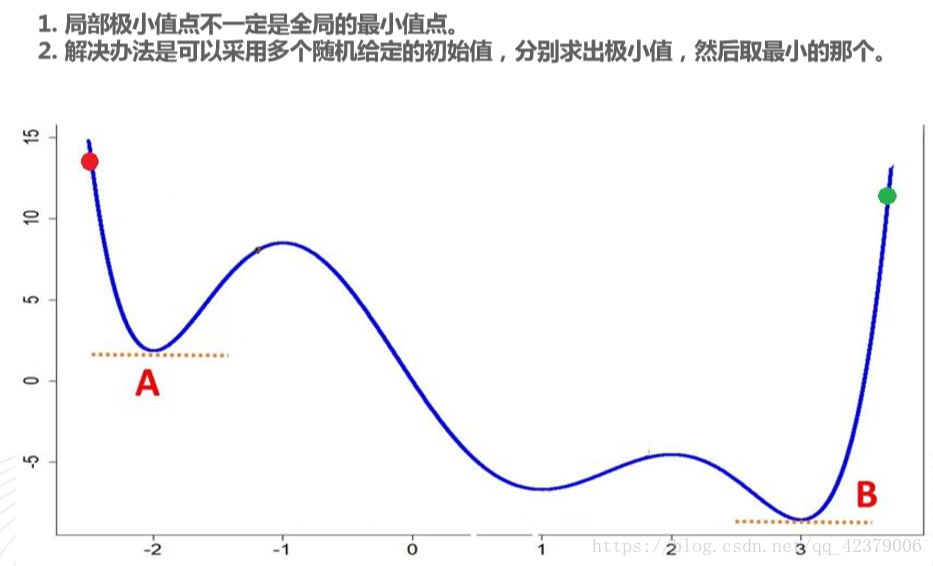
Figure 18: 極小值與最小值的差異
4.3. 模型的極限
在我們透過問卷取得大量的資料後，想像一下我們以這些資料來做為調整模型參數的依據，最後，我們如何評估這個模型的效能呢？一般來說，我們會把資料分成兩部份：
- 訓練資料: 用來給模型(神經網路)調整或學習參數
- 測試資料: 用來給模型(神經網路)測試或檢驗模型的效能。
之所以用不同的資料進行訓練與測試，是為了避免「過擬合」的狀況，即，因為測試資料與訓練資料一致，導致測試結果十分完美，然而，一旦把模型拿來應用到新的資料上（或是實際應用模型到真實世界中）時，反而效果會不如預期。
過擬合就好比學生在學習時只死記課本的習題，對於其他題型完全不予理會，如果考試也考課本的習題，考試成績自然優異，然而如果考試時題型略做變化，則考試結果就可能十分悲慘。
實際進行測試時，可以將資料分成數組，將其中一組當成測試資料。例如，分為A、B、C、D 4組，然後輪流拿這4組資料中的一組做為測試資料進行 4 次相同的測試，目的在於提升模型的「泛化能力」，也就是減少其過擬合的可能性。
4.4. 神經網路為什麼要有那麼多層
前節提及，我們的預測模型就如圖17所示，換言之，是在解一個\(f(x)=x_1*w_1+x_2*w_2+x_3*w_3+...+x_7*w_7\)的函式問題，那麼，為了能找到最理想的預測函數，可否把函數變的更加複雜，例如，將函數變為二次函數或更複雜的函數以提升預測的精準度？實則，這種社會科學的問題並不如自然科學的物理現象可以用明確的公式來解決，神經網路採用的是以組合的方式來將函數複雜化，例如，把圖17變為下圖的樣式，如此藉由改變各因素以及權值的組合，等於建立了許多新的特徵值，也增加了模型的複雜度。

Figure 19: 學測成績預測模型#3
然而，如果只是以這種「新增特徵值組合與權重」進而產生新特徵值的方式來改變模型，那麼，再多的層數也能合併為一層，因為這些運算方式均屬於線性轉換，為了有效讓模型更加複雜，此處可以在模型中加入非線性轉換，如圖20中的ReLU激勵函數，其結果如圖21所示。

Figure 20: ReLU 函數圖

Figure 21: 學測成績預測模型#4
5. DNN實作: 辨識手寫數字
使用神經網路解決問題分為兩個步驟：「學習」與「推論」，學習指使用訓練資料進行權重參數的學習；而推論指使用學習過的參數進行資料分類。
MNIST 是機器學習領域中相當著名的資料集，號稱機器學習領域的「Hello world.」，其重要性不言可喻。MNIST 資料集由 0~9 的數字影像構成(如圖22)，共計 60000 張訓練影像、10000 張測試影像。一般的 MNIST 資料集的用法為：使用訓練影像進行學習，再利用學習後的模型預測能否正確分類測試影像。
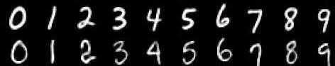
Figure 22: MNIST 資料集內容範例
5.1. 用 Keras 實作 MNIST 分類（精簡版）
此處以最簡單的 DNN 作為範例，使用 Keras 的 Sequential 模型。重點觀念：
- 用
.add()一層一層將神經網路疊起 - 第一層要指定輸入維度（=input_shape=）
- 最後一層的
units要等於分類數量（此例為 10） - 最後一層的激活函數使用 =softmax=（輸出各類別的機率）
1: import numpy as np 2: from keras.datasets import mnist 3: from keras.utils import to_categorical 4: from keras.models import Sequential 5: from keras.layers import Dense, Input 6: 7: # === 1. 載入並預處理資料 === 8: (x_train, y_train), (x_test, y_test) = mnist.load_data() 9: # 將 28x28 圖片攤平為 784 維向量，並正規化到 0~1 10: x_train = x_train.reshape(-1, 784).astype('float32') / 255 11: x_test = x_test.reshape(-1, 784).astype('float32') / 255 12: # 標籤轉為 one-hot encoding（例如 5 → [0,0,0,0,0,1,0,0,0,0]） 13: y_train = to_categorical(y_train, 10) 14: y_test = to_categorical(y_test, 10) 15: 16: # === 2. 建立模型（3 層隱藏層，每層 500 個神經元）=== 17: model = Sequential() 18: model.add(Input(shape=(784,))) 19: model.add(Dense(500, activation='relu')) 20: model.add(Dense(500, activation='relu')) 21: model.add(Dense(500, activation='relu')) 22: model.add(Dense(10, activation='softmax')) 23: model.summary() 24: 25: # === 3. 編譯與訓練 === 26: # 優化器用 adam，損失函數用 categorical_crossentropy（多分類標配） 27: model.compile(loss='categorical_crossentropy', optimizer='adam', metrics=['accuracy']) 28: model.fit(x_train, y_train, batch_size=1000, epochs=20, verbose=2) 29: 30: # === 4. 評估結果 === 31: score = model.evaluate(x_train, y_train, verbose=0) 32: print(f'\n訓練集準確率: {score[1]:.4f}') 33: score = model.evaluate(x_test, y_test, verbose=0) 34: print(f'測試集準確率: {score[1]:.4f}')
...略... 訓練集準確率: 0.9982 測試集準確率: 0.9823
5.2. Python手刻
5.2.1. 準備 MNIST 資料
準備資料是訓練模型的第一步，基礎資料可以是網上公開的資料集，也可以是自己的資料集。視覺、語音、語言等各種型別的資料在網上都能找到相應的資料集。
MNIST 資料集來自美國國家標準與技術研究所, National Institute of Standards and Technology (NIST). 訓練集 (training set) 由來自 250 個不同人手寫的數字構成, 其中 50% 是高中學生, 50% 來自人口普查局 (the Census Bureau) 的工作人員. 測試集(test set) 也是同樣比例的手寫數字資料。MNIST 資料集可在 http://yann.lecun.com/exdb/mnist/ 獲取, 它包含了四個部分:
- Training set images: train-images-idx3-ubyte.gz (9.9 MB, 解壓後 47 MB, 包含 60,000 個樣本)
- Training set labels: train-labels-idx1-ubyte.gz (29 KB, 解壓後 60 KB, 包含 60,000 個標籤)
- Test set images: t10k-images-idx3-ubyte.gz (1.6 MB, 解壓後 7.8 MB, 包含 10,000 個樣本)
- Test set labels: t10k-labels-idx1-ubyte.gz (5KB, 解壓後 10 KB, 包含 10,000 個標籤)
MNIST 資料集是一個適合拿來當作 TensorFlow 的練習素材，在 Tensorflow 的現有套件中，也已經有內建好的 MNIST 資料集，我們只要在安裝好 TensorFlow 的 Python 環境中執行以下程式碼，即可將 MNIST 資料成功讀取進來。
1: import tensorflow as tf 2: mnist = tf.keras.datasets.mnist 3: (x_train, y_train), (x_test, y_test) = mnist.load_data()
在訓練模型之前，需要將樣本資料劃分為訓練集、測試集，有些情況下還會劃分為訓練集、測試集、驗證集。由上述程式第3行可知，下載後的 MNIST 資料分成訓練資料(training data)與測試資料(testing data)，其中 x 為圖片、y為所對應數字。
1: import tensorflow as tf 2: mnist = tf.keras.datasets.mnist 3: (x_train, y_train), (x_test, y_test) = mnist.load_data() 4: # ====================================================== 5: # 判斷資料形狀 6: print(x_train.shape) 7: print(x_test.shape) 8: # 第一個label的內容 9: print(y_train[0]) 10: # 顯示影像內容 11: import matplotlib.pylab as plt 12: img = x_train[0] 13: plt.imshow(img) 14: #plt.savefig("MNIST-Image.png")
(60000, 28, 28) (10000, 28, 28) 5
由上述程式輸出結果可以看到載入的 x 為大小為 28*28 的圖片共 60000 張，每一筆 MNIST 資料的照片(x)由 784 個 pixels 組成（28*28），照片內容如圖23，訓練集的標籤(y)則為其對應的數字(0～9)，此例為 5。
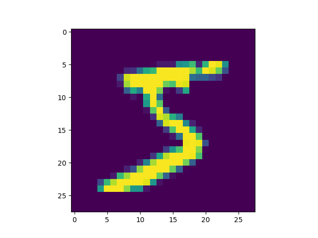
Figure 23: MNIST 影像示例
x 的影像資料為灰階影像，每個像素的數值介於 0~255 之間，矩陣裡每一項的資料則是代表每個 pixel 顏色深淺的數值，如下圖24所示：
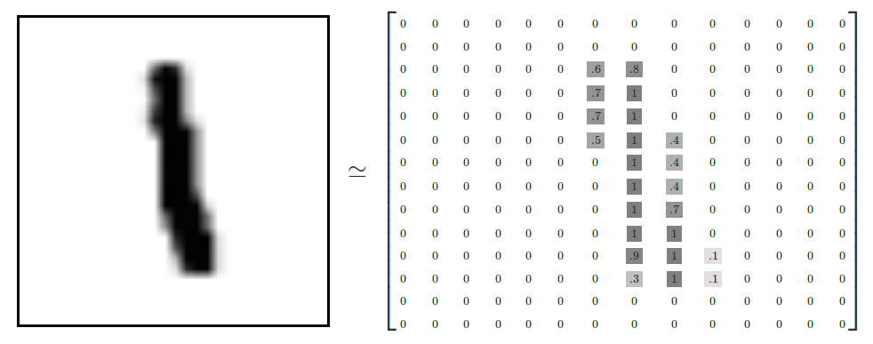
Figure 24: MNIST 資料矩陣
載入的 y 為所對應的數字 0~9，在這我們要運用 keras 中的 np_utils.to_categorical 將 y 轉成 one-hot 的形式，將他轉為一個 10 維的 vector，例如：我們所拿到的資料為 y=3，經過 np_utils.to_categorical，會轉換為 y=[0,0,0,1,0,0,0,0,0,0]。這部份的轉換程式碼如下：
1: from keras.datasets import mnist 2: from keras.utils import to_categorical 3: 4: import tensorflow as tf 5: mnist = tf.keras.datasets.mnist 6: (x_train, y_train), (x_test, y_test) = mnist.load_data() 7: # ===================================== 8: # 將圖片轉換為一個60000*784的向量，並且標準化 9: x_train = x_train.reshape(x_train.shape[0], 28*28) 10: x_test = x_test.reshape(x_test.shape[0], 28*28) 11: x_train = x_train.astype('float32') 12: x_test = x_test.astype('float32') 13: x_train = x_train/255 14: x_test = x_test/255 15: # 將y轉換成one-hot encoding 16: y_train = to_categorical(y_train, 10) 17: y_test = to_categorical(y_test, 10) 18: # 回傳處理完的資料 19: print(y_train[0]) 20: 21: import numpy as np 22: np.set_printoptions(precision=2, linewidth=np.inf) 23: print(x_train[0].reshape(28, 28))
[0. 0. 0. 0. 0. 1. 0. 0. 0. 0.] [[0. 0. 0. 0. 0. 0. 0. 0. 0. 0. 0. 0. 0. 0. 0. 0. 0. 0. 0. 0. 0. 0. 0. 0. 0. 0. 0. 0. ] [0. 0. 0. 0. 0. 0. 0. 0. 0. 0. 0. 0. 0. 0. 0. 0. 0. 0. 0. 0. 0. 0. 0. 0. 0. 0. 0. 0. ] [0. 0. 0. 0. 0. 0. 0. 0. 0. 0. 0. 0. 0. 0. 0. 0. 0. 0. 0. 0. 0. 0. 0. 0. 0. 0. 0. 0. ] [0. 0. 0. 0. 0. 0. 0. 0. 0. 0. 0. 0. 0. 0. 0. 0. 0. 0. 0. 0. 0. 0. 0. 0. 0. 0. 0. 0. ] [0. 0. 0. 0. 0. 0. 0. 0. 0. 0. 0. 0. 0. 0. 0. 0. 0. 0. 0. 0. 0. 0. 0. 0. 0. 0. 0. 0. ] [0. 0. 0. 0. 0. 0. 0. 0. 0. 0. 0. 0. 0.01 0.07 0.07 0.07 0.49 0.53 0.69 0.1 0.65 1. 0.97 0.5 0. 0. 0. 0. ] [0. 0. 0. 0. 0. 0. 0. 0. 0.12 0.14 0.37 0.6 0.67 0.99 0.99 0.99 0.99 0.99 0.88 0.67 0.99 0.95 0.76 0.25 0. 0. 0. 0. ] [0. 0. 0. 0. 0. 0. 0. 0.19 0.93 0.99 0.99 0.99 0.99 0.99 0.99 0.99 0.99 0.98 0.36 0.32 0.32 0.22 0.15 0. 0. 0. 0. 0. ] [0. 0. 0. 0. 0. 0. 0. 0.07 0.86 0.99 0.99 0.99 0.99 0.99 0.78 0.71 0.97 0.95 0. 0. 0. 0. 0. 0. 0. 0. 0. 0. ] [0. 0. 0. 0. 0. 0. 0. 0. 0.31 0.61 0.42 0.99 0.99 0.8 0.04 0. 0.17 0.6 0. 0. 0. 0. 0. 0. 0. 0. 0. 0. ] [0. 0. 0. 0. 0. 0. 0. 0. 0. 0.05 0. 0.6 0.99 0.35 0. 0. 0. 0. 0. 0. 0. 0. 0. 0. 0. 0. 0. 0. ] [0. 0. 0. 0. 0. 0. 0. 0. 0. 0. 0. 0.55 0.99 0.75 0.01 0. 0. 0. 0. 0. 0. 0. 0. 0. 0. 0. 0. 0. ] [0. 0. 0. 0. 0. 0. 0. 0. 0. 0. 0. 0.04 0.75 0.99 0.27 0. 0. 0. 0. 0. 0. 0. 0. 0. 0. 0. 0. 0. ] [0. 0. 0. 0. 0. 0. 0. 0. 0. 0. 0. 0. 0.14 0.95 0.88 0.63 0.42 0. 0. 0. 0. 0. 0. 0. 0. 0. 0. 0. ] [0. 0. 0. 0. 0. 0. 0. 0. 0. 0. 0. 0. 0. 0.32 0.94 0.99 0.99 0.47 0.1 0. 0. 0. 0. 0. 0. 0. 0. 0. ] [0. 0. 0. 0. 0. 0. 0. 0. 0. 0. 0. 0. 0. 0. 0.18 0.73 0.99 0.99 0.59 0.11 0. 0. 0. 0. 0. 0. 0. 0. ] [0. 0. 0. 0. 0. 0. 0. 0. 0. 0. 0. 0. 0. 0. 0. 0.06 0.36 0.99 0.99 0.73 0. 0. 0. 0. 0. 0. 0. 0. ] [0. 0. 0. 0. 0. 0. 0. 0. 0. 0. 0. 0. 0. 0. 0. 0. 0. 0.98 0.99 0.98 0.25 0. 0. 0. 0. 0. 0. 0. ] [0. 0. 0. 0. 0. 0. 0. 0. 0. 0. 0. 0. 0. 0. 0.18 0.51 0.72 0.99 0.99 0.81 0.01 0. 0. 0. 0. 0. 0. 0. ] [0. 0. 0. 0. 0. 0. 0. 0. 0. 0. 0. 0. 0.15 0.58 0.9 0.99 0.99 0.99 0.98 0.71 0. 0. 0. 0. 0. 0. 0. 0. ] [0. 0. 0. 0. 0. 0. 0. 0. 0. 0. 0.09 0.45 0.87 0.99 0.99 0.99 0.99 0.79 0.31 0. 0. 0. 0. 0. 0. 0. 0. 0. ] [0. 0. 0. 0. 0. 0. 0. 0. 0.09 0.26 0.84 0.99 0.99 0.99 0.99 0.78 0.32 0.01 0. 0. 0. 0. 0. 0. 0. 0. 0. 0. ] [0. 0. 0. 0. 0. 0. 0.07 0.67 0.86 0.99 0.99 0.99 0.99 0.76 0.31 0.04 0. 0. 0. 0. 0. 0. 0. 0. 0. 0. 0. 0. ] [0. 0. 0. 0. 0.22 0.67 0.89 0.99 0.99 0.99 0.99 0.96 0.52 0.04 0. 0. 0. 0. 0. 0. 0. 0. 0. 0. 0. 0. 0. 0. ] [0. 0. 0. 0. 0.53 0.99 0.99 0.99 0.83 0.53 0.52 0.06 0. 0. 0. 0. 0. 0. 0. 0. 0. 0. 0. 0. 0. 0. 0. 0. ] [0. 0. 0. 0. 0. 0. 0. 0. 0. 0. 0. 0. 0. 0. 0. 0. 0. 0. 0. 0. 0. 0. 0. 0. 0. 0. 0. 0. ] [0. 0. 0. 0. 0. 0. 0. 0. 0. 0. 0. 0. 0. 0. 0. 0. 0. 0. 0. 0. 0. 0. 0. 0. 0. 0. 0. 0. ] [0. 0. 0. 0. 0. 0. 0. 0. 0. 0. 0. 0. 0. 0. 0. 0. 0. 0. 0. 0. 0. 0. 0. 0. 0. 0. 0. 0. ]]
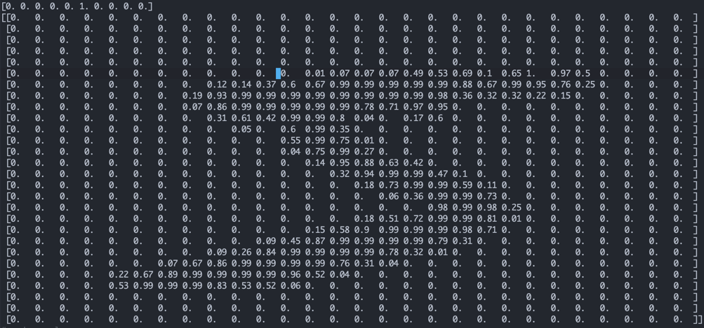
Figure 25: x_train[0].reshape(28, 28)
5.2.2. MNIST 的推論處理
如圖26所示，MNIST 的推論神經網路最前端的輸入層有 784 (\(28*28=784\))個神經元，最後的輸出端有 10 個神經元(\(0~9\)個數字)，至於中間的隱藏層有兩個，第 1 個隱藏層有 50 個神經元，第 2 層有 100 個。此處的 50、100 可以設定為任意數（如，也可以是 128、64）。
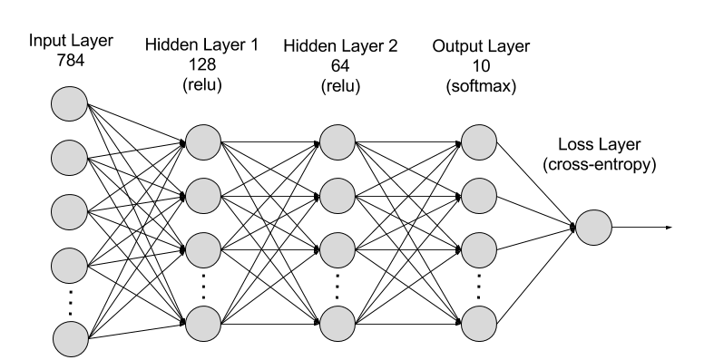
Figure 26: MNIST-NeuralNet
以下用純 numpy 手刻一個三層神經網路來進行 MNIST 推論。流程為：先用 Keras 快速訓練一組權重，再把權重取出，用我們自己寫的前向傳播函數來預測。這樣你就能看到「神經網路推論」背後其實就是一連串的矩陣乘法 + 激勵函數。
1: import numpy as np 2: from keras.datasets.mnist import load_data 3: from keras.models import Sequential 4: from keras.layers import Dense, Input 5: from keras.utils import to_categorical 6: 7: # === Step 1: 用 Keras 快速訓練，取得權重 === 8: (X_train, y_train), (X_test, y_test) = load_data() 9: X_train_flat = X_train.reshape(-1, 784).astype('float32') / 255 10: X_test_flat = X_test.reshape(-1, 784).astype('float32') / 255 11: y_train_oh = to_categorical(y_train, 10) 12: 13: model = Sequential([ 14: Input(shape=(784,)), 15: Dense(50, activation='sigmoid'), 16: Dense(100, activation='sigmoid'), 17: Dense(10, activation='softmax') 18: ]) 19: model.compile(optimizer='adam', loss='categorical_crossentropy', metrics=['accuracy']) 20: model.fit(X_train_flat, y_train_oh, epochs=5, batch_size=128, verbose=0) 21: 22: # 取出 Keras 訓練好的權重 23: weights = {} 24: w = model.get_weights() # [W1, b1, W2, b2, W3, b3] 25: weights['W1'], weights['b1'] = w[0], w[1] 26: weights['W2'], weights['b2'] = w[2], w[3] 27: weights['W3'], weights['b3'] = w[4], w[5] 28: 29: # === Step 2: 用純 numpy 進行前向傳播（手刻推論）=== 30: def sigmoid(x): 31: return 1 / (1 + np.exp(-np.clip(x, -500, 500))) 32: 33: def softmax(x): 34: c = np.max(x) 35: exp_x = np.exp(x - c) # 防止溢位 36: return exp_x / np.sum(exp_x) 37: 38: def predict(network, x): 39: W1, W2, W3 = network['W1'], network['W2'], network['W3'] 40: b1, b2, b3 = network['b1'], network['b2'], network['b3'] 41: a1 = np.dot(x, W1) + b1 # 第 1 層加權和 42: z1 = sigmoid(a1) # 第 1 層激勵函數 43: a2 = np.dot(z1, W2) + b2 # 第 2 層加權和 44: z2 = sigmoid(a2) # 第 2 層激勵函數 45: a3 = np.dot(z2, W3) + b3 # 輸出層加權和 46: y = softmax(a3) # 輸出層激勵函數 47: return y 48: 49: # === Step 3: 逐一預測並計算準確率 === 50: accuracy_cnt = 0 51: for i in range(len(X_test_flat)): 52: y = predict(weights, X_test_flat[i]) 53: p = np.argmax(y) 54: if p == y_test[i]: 55: accuracy_cnt += 1 56: print(f'手刻推論準確率：{accuracy_cnt / len(X_test_flat):.4f}') 57: 58: # 看看第一筆預測的機率分佈 59: y0 = predict(weights, X_test_flat[0]) 60: np.set_printoptions(precision=4, suppress=True) 61: print(f'第一筆預測機率: {y0}') 62: print(f'預測結果: {np.argmax(y0)}, 正確答案: {y_test[0]}')
手刻推論準確率：0.9600 第一筆預測機率: [0.0004 0.0011 0.9859 ...] 預測結果: 7, 正確答案: 7
上述程式中，predict 函數(第38行)透過矩陣相乘運算完成神經網路的前向傳播。程式碼第52行為神經網路針對輸入圖片的預測結果，傳回值為各數字的機率陣列；而第53行的 np.argmax(y) 會傳回機率最高的索引，即為預測的數字。
5.2.3. Python 與神經網路運算的批次處理
前節程式碼中最後以 for 迴圈來逐一處理預測結果與比較，輸入(X)為單一圖片，其處理程序如圖27所示：
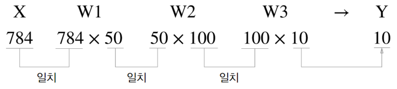
Figure 27: MNIST-單一處理架構
事實上，在使用批次處理（如一次處理 100 張圖）反而能大幅縮短每張圖片的處理時間，因為多數處理數值運算的函式庫都會針對大型陣列運算進行最佳化，尤其是透過 GPU 來處理時更是如此，這時，傳送單張圖片反而成為效能瓶頸，以批次處理則可減輕匯流排頻寬負擔。若以每次處理 100 張為例，其處理程序則如圖28所示。
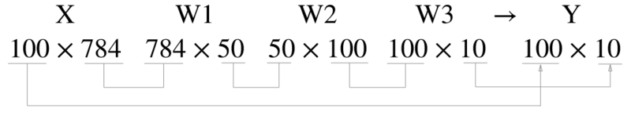
Figure 28: MNIST-批次處理架構
至於批次運算的概念如下：與其一張一張送進 predict 函數，不如一次送入一整批（例如 100 張）。由於 numpy 對大型矩陣運算有最佳化，批次處理在 GPU 上更是快到飛起來。概念程式碼如下（延續前節的 predict 函數與 weights 變數）：
# 批次處理架構（概念示意）
batch_size = 100
accuracy_cnt = 0
for i in range(0, len(X_test_flat), batch_size):
x_batch = X_test_flat[i:i+batch_size] # 一次取 100 張
# 注意：此處的 predict 需支援矩陣輸入（非單一向量）
y_batch = predict(weights, x_batch)
p = np.argmax(y_batch, axis=1) # 取每筆資料最大值的索引
accuracy_cnt += np.sum(p == y_test[i:i+batch_size])
print(f'批次處理準確率：{accuracy_cnt / len(X_test_flat):.4f}')
其中關鍵在於：=x_batch= 的形狀為 (100, 784)，經過矩陣乘法後一次就能得到 100 筆預測結果，效率遠高於逐筆處理。
上面我們用 numpy 手刻了整個前向傳播流程——雖然能幫助理解神經網路的運作原理，但每次都要自己寫矩陣運算、管理權重，實在太痛苦了。前面的 Keras 精簡版已經展示了更方便的做法：只要 .add() 幾行就能堆出一個神經網路。
至於如何訓練更好的模型（處理過度配適、選擇優化器、嘗試不同問題類型），我們會在深度學習中深入探討。
6. 課堂練習 TNFSH
6.1. 練習一：神經網路的「開悟」之旅——用 numpy 手刻 XOR
還記得在感知器課程中，單層感知器被 XOR 問題打趴在地上嗎？今天我們要見證「多一層神經元」帶來的奇蹟——從「做不到」到「輕鬆搞定」，這就是深度學習的威力。
6.1.1. 範例
以下程式碼用純 numpy 建立了一個兩層神經網路，直接給定可行的權重（不訓練），用前向傳播來解 XOR：
1: import numpy as np 2: 3: def sigmoid(x): 4: return 1 / (1 + np.exp(-x)) 5: 6: # XOR 的四筆資料 7: X = np.array([[0,0], [0,1], [1,0], [1,1]]) 8: y_true = np.array([0, 1, 1, 0]) 9: 10: # === 已知可行的權重 === 11: # 隱藏層: 2 個神經元 12: W1 = np.array([[20, 20], # 第 1 個隱藏神經元 → 像 OR gate 13: [-20, -20]]) # 第 2 個隱藏神經元 → 像 NAND gate 14: b1 = np.array([-10, 30]) 15: 16: # 輸出層: 1 個神經元（結合 OR 和 NAND → XOR！） 17: W2 = np.array([[20], [20]]) 18: b2 = np.array([-30]) 19: 20: # === 前向傳播 === 21: print("=== XOR 前向傳播 ===\n") 22: for i in range(len(X)): 23: z1 = np.dot(X[i], W1.T) + b1 24: a1 = sigmoid(z1) 25: z2 = np.dot(a1, W2) + b2 26: a2 = sigmoid(z2) 27: pred = 1 if a2[0] > 0.5 else 0 28: print(f"輸入: {X[i]} → 隱藏層: [{a1[0]:.4f}, {a1[1]:.4f}] → 輸出: {a2[0]:.4f} → 預測={pred}, 正確={y_true[i]}")
=== XOR 前向傳播 === 輸入: [0 0] → 隱藏層: [0.0000, 1.0000] → 輸出: 0.0000 → 預測=0, 正確=0 輸入: [0 1] → 隱藏層: [1.0000, 1.0000] → 輸出: 1.0000 → 預測=1, 正確=1 輸入: [1 0] → 隱藏層: [1.0000, 1.0000] → 輸出: 1.0000 → 預測=1, 正確=1 輸入: [1 1] → 隱藏層: [1.0000, 0.0000] → 輸出: 0.0000 → 預測=0, 正確=0
6.1.2. 你的任務
在一所學校裡，下課時間的玩樂規則如下：
- 天氣好(1) 且 沒有考試(1) → 去操場玩(1)
- 天氣好(1) 且 有考試(0) → 去操場玩(1)（反正考不好也不差這一次）
- 天氣差(0) 且 沒有考試(1) → 去操場玩(1)（下雨也要玩）
- 天氣差(0) 且 有考試(0) → 乖乖讀書(0)（下雨又要考試，命運在呼喚你）
這其實就是 OR gate！請修改上面的範例，把 XOR 的權重改成能解 OR 問題的權重。
提示：OR gate 比 XOR 簡單多了，你只需要一層就夠（但為了練習，還是用兩層網路來做）。
預期輸出
輸入: [0 0] → 預測=0, 正確=0 （天氣差+有考試 → 讀書） 輸入: [0 1] → 預測=1, 正確=1 （天氣差+沒考試 → 玩） 輸入: [1 0] → 預測=1, 正確=1 （天氣好+有考試 → 還是玩） 輸入: [1 1] → 預測=1, 正確=1 （天氣好+沒考試 → 當然玩）
6.2. 練習二：用 Keras 預測「誰會被當」——你的第一個深度學習模型
學校裡每次段考完，老師都要判斷誰需要補考。現在你要訓練一個神經網路，根據平時表現來預測誰會被當掉。如果你的模型夠準，也許未來就不用考試了——讓 AI 直接判你死刑。
6.2.1. 範例
以下程式碼用 Keras 建立了一個「會不會被當」的預測模型，訓練資料是 10 位同學的作業和出席分數：
1: import numpy as np 2: from keras.models import Sequential 3: from keras.layers import Dense, Input 4: 5: # === 訓練資料：10 位同學的 [作業分數, 出席率] === 6: # 作業分數: 0~100, 出席率: 0~100 7: X_train = np.array([ 8: [90, 95], [30, 40], [85, 80], [20, 30], [70, 75], 9: [40, 50], [80, 85], [25, 20], [75, 70], [35, 45] 10: ], dtype='float32') / 100.0 # 正規化到 0~1 11: 12: # 標籤: 1=過關, 0=被當 13: y_train = np.array([1, 0, 1, 0, 1, 0, 1, 0, 1, 0], dtype='float32') 14: 15: # === 建立模型 === 16: model = Sequential() 17: model.add(Input(shape=(2,))) # 2 個輸入特徵 18: model.add(Dense(4, activation='relu')) # 隱藏層 4 個神經元 19: model.add(Dense(1, activation='sigmoid')) # 輸出：過關機率 20: 21: # === 編譯與訓練 === 22: model.compile(optimizer='adam', loss='binary_crossentropy', metrics=['accuracy']) 23: history = model.fit(X_train, y_train, epochs=200, verbose=0) 24: print(f"訓練完成！最終 accuracy: {history.history['accuracy'][-1]:.1%}") 25: 26: # === 預測三位新同學 === 27: new_students = np.array([[60, 70], [45, 50], [80, 90]], dtype='float32') / 100.0 28: preds = model.predict(new_students, verbose=0) 29: names = ["小明(作業60/出席70)", "小華(作業45/出席50)", "小美(作業80/出席90)"] 30: print("\n預測結果：") 31: for name, p in zip(names, preds): 32: verdict = "過關" if p[0] > 0.5 else "被當" 33: emoji = "OK" if p[0] > 0.5 else "GG" 34: print(f" {name} → {p[0]:.3f} → {verdict} {emoji}")
訓練完成！最終 accuracy: 100.0% 預測結果： 小明(作業60/出席70) → 0.703 → 過關 OK 小華(作業45/出席50) → 0.187 → 被當 GG 小美(作業80/出席90) → 0.953 → 過關 OK
6.2.2. 你的任務
請修改上面的程式碼，把預測目標從「會不會被當」改成「會不會考上第一志願」。
修改要求：
- 把輸入特徵改為 =[模考成績, 每天讀書時數]=（模考成績 0~100，每天讀書時數 0~10）
- 自己編造至少 10 筆訓練資料（合理即可，例如模考 90 分 + 每天讀 8 小時 → 上榜）
- 注意：讀書時數的範圍是 0~10，正規化時要除以 10 而非 100
- 預測以下三位同學是否考上：模考 75/每天讀 5 小時、模考 40/每天讀 2 小時、模考 85/每天讀 7 小時
預期輸出格式
訓練完成！最終 accuracy: 100.0% 預測結果： 模考75/讀5hr → 0.xxx → 上榜/落榜 模考40/讀2hr → 0.xxx → 上榜/落榜 模考85/讀7hr → 0.xxx → 上榜/落榜
（具體的預測數值會因你編造的訓練資料和隨機種子而不同，但大方向應該是：模考 75/讀 5hr 在邊緣、模考 40/讀 2hr 應落榜、模考 85/讀 7hr 應上榜）